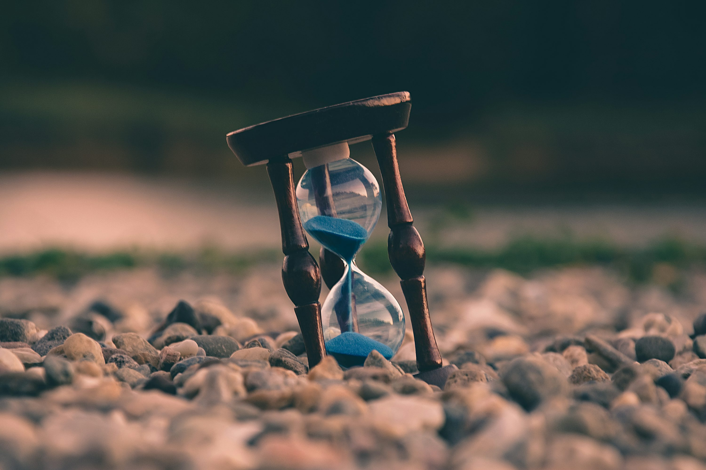

I had been procrastinating over the past few days and I wanted to do the same today but I had a ton of blockers set up to avoid that. This lead to me wondering what to do and I thought ofcourse YouTube my source of procrastination once my social media got blocked over the past few days. It was blocked too which lead to me asking ChatGPT to help me build a blog. It gave me very simple codes and I expanded on most of it to make it more of a blog that depicts me.

I may have taken around 3 hours to set all of this up and I haven't yet published it online. But this goes to show how there is loads of time in a day and one wiles it away on apps that are made to keep us engaged.
“Don't wait. The time will never be just right.”
Lessons Learned
- I can create a webpage anytime now with a little help from ChatGPT ofcourse
- My blockers have helped me relax without wasting majority of my time on social media recently and even though I procrastinated I haven't felt super bad about it (especially today)
- Allowing myself to rest when I am sick isn't a crime and I can do a lot of things while being in bed example, this blog site I created by myself (yes, yes and ChatGPT)
Overall, I am excited to start this journey. Will I maintain it? Will I make this public? It's just a question of time and effort.